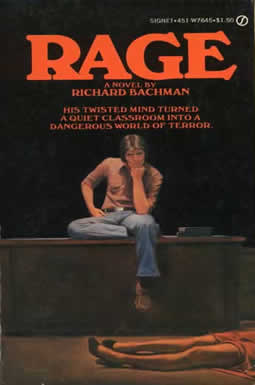

<main class="window">
    <div class="clearfix">
    
    <div>
    In the late 1970s and early 1980s, King published a handful of short novels—Rage (1977), The Long Walk (1979), 
    Roadwork (1981), The Running Man (1982) and Thinner (1984)—under the pseudonym Richard Bachman. 
    The idea behind this was to test whether he could replicate his success again and to allay his fears that his popularity was an accident. 
    An alternate explanation was that publishing standards at the time allowed only a single book a year. 
    He picked up the name from the Canadian hard rock band Bachman–Turner Overdrive, of which he is a fan. 
    Richard Bachman was exposed as King's pseudonym by a persistent Washington, D.C. bookstore clerk, Steve Brown, 
    who noticed similarities between the works and later located publisher's records at the Library of Congress that 
    named King as the author of one of Bachman's novels. This led to a press release heralding Bachman's "death"—supposedly from 
    "cancer of the pseudonym". King dedicated his 1989 book The Dark Half, about a pseudonym turning on a writer, 
    to "the deceased Richard Bachman", and in 1996, when the Stephen King novel Desperation was released, the companion novel 
    The Regulators carried the "Bachman" byline.                
    In 2006, during a press conference in London, King declared that he had discovered another Bachman novel, titled Blaze. 
    It was published on June 12, 2007. In fact, the original manuscript had been held at King's Alma mater, the University of Maine in Orono, 
    for many years and had been covered by numerous King experts. King rewrote the original 1973 manuscript for its publication.               
    King has used other pseudonyms. The short story "The Fifth Quarter" was published under the pseudonym John Swithen 
    (the name of a character in the novel Carrie), by Cavalier in April 1972. The story was reprinted in King's collection 
    Nightmares & Dreamscapes in 1993 under his own name. In the introduction to the Bachman novel Blaze, King claims, with tongue-in-cheek, 
    that "Bachman" was the person using the Swithen pseudonym.               
    The "children's book" Charlie the Choo-Choo: From the World of The Dark Tower was published in 2016 under the pseudonym Beryl Evans, 
    who was portrayed by actress Allison Davies during a book signing at San Diego Comic-Con, and illustrated by Ned Dameron. 
    It is adapted from a fictional book central to the plot of King's previous novel The Dark Tower III: The Waste Lands.
    </div>
    </div>
</main>